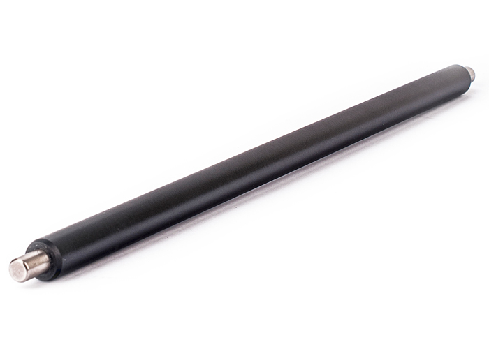

Фотобарабаном може називатися світлочутливий або фоторецептора барабан, photoreceptor, drum unit або organic
photo conductor (ОРС). Це головна деталь лазерного принтера. Вона забезпечує формування зображення і його
перенесення на паперовий носій.
Фотобарабан являє собою порожнистий металевий циліндр (найчастіше алюмінієвий), покритий тонким шаром
фотопровідного матеріалу. Він має властивість змінювати електропровідність під впливом електромагнітного (в
даному випадку світлового) випромінювання.
В якості фоточутливого шару раніше використовувалися сполуки селену. Зараз застосовується аморфний кремній
або органічні сполуки, склад яких виробники не розкривають.
Вал первинного заряду

Рис.2 - Вал заряду
Вал первинного заряду, може називатися зарядним роликом первинного заряду, валом переносу заряду або primary
charge roller (PCR). Ця деталь виконує дві функції: заряджає поверхню фотобарабана і стирає залишковий
електростатичний заряд, що залишився від попередньої зарядки.
Вал первинного заряду являє собою металевий стрижень, на якому є поролонова або гумова оболонка з
струмопровідним
шаром. На стрижень під час роботи друкувального пристрою по черзі подається постійний і змінний струм.
Постійний
струм необхідний для передачі негативного заряду на фотобарабан, а змінний - для видалення залишкового
електростатичного зображення з його поверхні.
Вал первинного заряду в картриджі іноді плутають з коротроном. Коротрон використовувався в старих
конструкціях
картриджів. Він являв собою провід, натягнутий паралельно до фотобарабану, а перенесення заряду виконувалося
в
результаті коронного розряду. Під час цього процесу виділявся шкідливий для здоров'я озон. В повітрі біля
старих
"ксероксів" було добре чути запах озону. Сьогодні коротрони не використовуються в конструкціях лазерних
принтерів. Замість них встановлюються вали первинного заряду, які не мають такого недоліку.